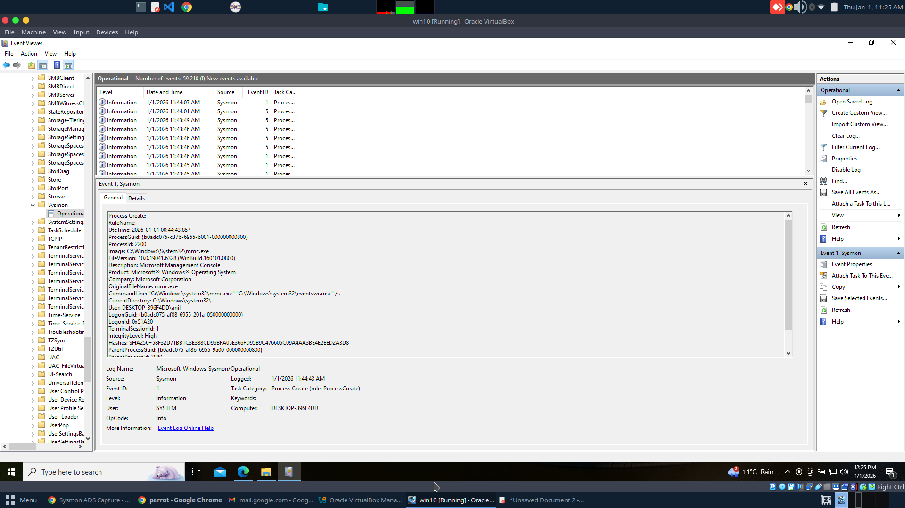
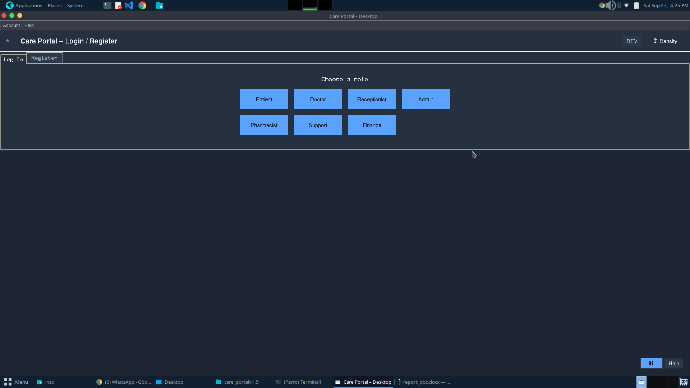
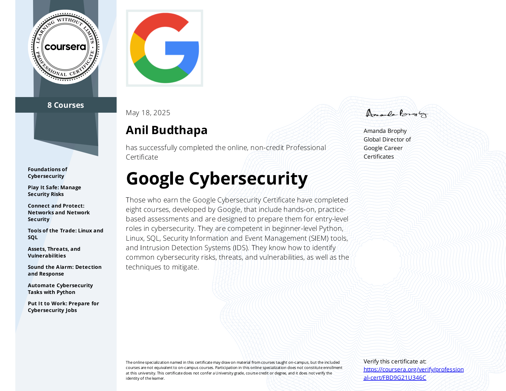

LOG COLLECTIONMITRE ATT&CK
insoSIEM
SIEM-focused project exploring log collection, normalization, detection use cases, and investigation workflows.
HighlightRepeatable triage notes
Status2025-Present
Entry-level cybersecurity and SOC candidate based in Melbourne with hands-on lab and project experience in alert triage, incident handling, SIEM investigations, log analysis, Windows security events, Active Directory and IAM fundamentals, vulnerability assessment, and OWASP-aligned web testing.
Alert triage, escalation, investigation notes
Risk, compliance basics, documentation
Access reviews, AD, identity workflows
Technical stack and analyst competencies
Comfortable documenting findings, validating common issues, and connecting identity activity to SOC monitoring use cases.
01 Python for security tooling
02 Bash and shell scripting
03 SQL and Go fundamentals
Projects from the resume: SIEM workflows, OWASP-aligned testing, secure application design, SOC practice, Active Directory identity security, and GRC documentation.

SIEM-focused project exploring log collection, normalization, detection use cases, and investigation workflows.
Modular web security testing framework aligned to OWASP Top 10 with evidence capture and reporting structure.

Role-based application project emphasizing permissions, authentication and authorization flows, and secure design thinking.
Hands-on practice with HTTP traffic, sessions, authentication behavior, Windows security events, triage, escalation decisions, and structured findings.
Lab-based practice covering users, groups, privileges, access reviews, and identity-related SOC monitoring use cases.
Documentation arrow_forward
Provider: Google - Completed
Provider: TryHackMe - Completed
THM-6K5TBUSQXE
Provider: Simplilearn SkillUp - Completed
Major: Cybersecurity - Kent Institute Australia, Melbourne
ISACA ID 2244571 and Australian Computer Society Member ID 4476790.
A publishing path is ready for future writeups
Placeholder index for future SOC notes, detection writeups, GRC learning, IAM labs, and project case studies.
Open path arrow_forwardExisting blue-team reference for SOC teams using Sysmon telemetry.
Read current post open_in_new$ mkdir blogs/new-post
ready_for_future_content=true
$ publish_next_writeup.sh
STATUS: WAITING_FOR_AUTHOR
Currently based in Springvale, Melbourne, VIC, Australia. Open to graduate, junior, and entry-level cybersecurity opportunities across on-site, hybrid, and remote roles in Australia.
For recruitment inquiries, collaborations, or junior security opportunities.
hypemsltech@gmail.com arrow_forward$ whoami
anil_budthapa
$ cat target_roles.txt
junior_soc_analyst | cybersecurity_analyst | vulnerability_management | security_operations | iam_analyst | grc_analyst
$ cat contact.txt
email=hypemsltech@gmail.com // phone=+61 421 688 186 // linkedin=linkedin.com/in/anilbudthapa